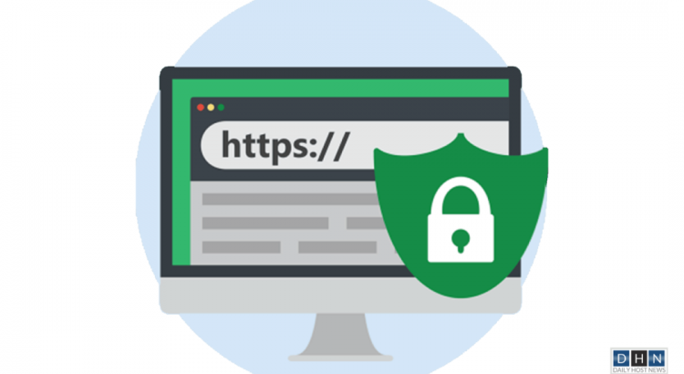
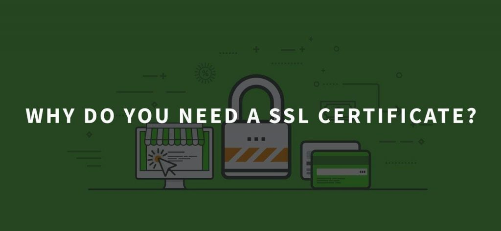
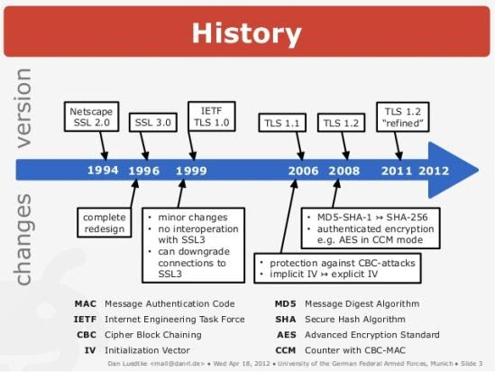
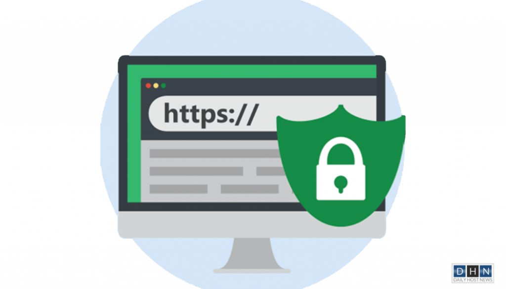

Which One to Choose?– Between SSL and TLS for Web Encryption
As you find success in your online business, it becomes quite normal to use your sensitive information like username, passwords, credit card details, etc., over the internet.But with this achievement in virtual trade, cybercriminals are also becoming more potent by finding new ways to attack the users or the websites to acquire their data.So security protocols such as SSL and TLSwere introduced to keep the sites and the clients safe from these scams.
SSL stands for 'Secure Sockets Layer' and TLS refers to 'Transport Layer Security'.SSL and TLS are security protocols that secure the data exchange between a web server and the client.Both security conventions perform the same task of encryption/decryption but are different from each other.To better understand the difference between the two, you should first know why we need an SSL/TLS certificate.
The Need for SSL/TLS Certificate
As the online business is expanding, the need for a strict security policy is also increasing.Cybercriminals are coming with new techniques to harm you by getting your sensitive information.SSL/TLS certificates help you in this regard.A website that uses an SSL certificate is a secure site where all the data exchange between the users and the web servers is encrypted.In this way, you stay safe from man-in-the-middle (MITM) attacks and some other forms of theft.
As a user, when you visit a site, you must have noticed a 'not-secure connection' warning on some websites.It is because those sites do not use SSL certificates.It means that the sharing of sensitive data on that site is not safe.So, you must step back from that site and move to the one with a secure connection.
As a website owner, you must wish to keep the data exchange between you and your clients secure and beyond the reach of hackers.So, you must buy an SSL certificate to keep your site safe from scammers.Also, a website with valid SSL certificates ranks higher in search engine rankings which is a good sign for your business.SSL certificates help in increasing the trust of your clients on your site.So, buying the cheapest SSL certificate is going to be priceless for your online business.
Here is the list of best SSL certificate providers to buy SSL certificate:
Difference between SSL and TLS
Both SSL and TLS work towards the protection of the website.Mostly, people consider that both are the same but there is a difference between the two.SSL is the first version of cybersecurity which got two, three updates after it was unable to tackle vulnerabilities.TLS is the new version of security protocol and it gets updated from time to time.The functioning of both SSL/TLS is the same as TLS provides extra security services that meet the demands in today’s online world while SSL lacks it.A brief history of both SSL and TLS is explained below to better understand them.
History of SSL
In 1994, Netscape developed an SSL system that ensured the safety of the users and the web servers, using this protocol.The first version of SSL was SSL 1.0 which was not launched due to severe security drawbacks.Then in 1995, Netscape issued SSL v.2.0, which was its first public release.However, this version had some design flaws which forced Netscape to release a new version of SSL.
So, Netscape upgraded SSL v2.0 to SSL v3.0 which covered the issues of the previous design.This version was deprecated in 2004 after the POODLE attack.
History of TLS
TLS is the same security protocol as SSL but its upgraded version.TLS is the successor of SSL v3.0.In 1999, TLS v1.0 was launched which was an updated version of SSL v3.0.
In 2006, TLS v1.1 was released which was an upgrade of the previous version.In this version, security against Cipher Block Chaining (CBC) was added.
In 2018, TLS v1.3 was released with major security updates.In this form, some security protocols that were not safe and were being used in previous versions are removed like SHA-1, MD5, RC4, and 3DES. Handshake texts are encrypted after 'Server Hello' in this version.This version covered all the security threats of this time by adding security measures like digital signatures, zero round-up time, etc.
Although, TLS v1.3 is the latest and most secure form of security protocol, yet some websites still use SSL v3.0, TLS v1.1, and TLS v1.2.
If SSL is NOT Secure then Why is it called an SSL Certificate?
As you have got the idea that TLS is the recent version of the security system and SSL is the deplored one.But you wonder, still, it is known as an SSL certificate and the name of TLS is not well-known.
Most of the popular certificate providers still use SSL certificate name on their websites, that’s the reason it is still in use.You can say that this name has become a brand.Whereas in reality, an SSL certificate is an SSL/TLS certificate which means that with this license you can use both SSL and TLS protocols.
More clearly, you do not need to worry about your SSL certificate because SSL certificate and TLS certificate are not separate things and you do not need to replace your SSL certificate with a TLS certificate.You just need to use the TLS security protocol on your SSL/TLS certificate.
Which One to Choose Between TLS and SSL?
TLS is an upgrade to SSL.SSL security protocol has failed in protecting a website completely.It has many flaws and security vulnerabilities.That’s why its first two releases were deemed to be insecure by many famous browsers.Because of the increase in cyber-attacks, it is not wrong to say that using SSL security protocol nowadays is putting yourself in trouble with your own hand.
TLS, on the other hand, comes up with new security updates which SSL does not provide.Also, TLS v1.0 and v1.1 are being blocked from many sites.
So, you should use the latest version of TLS security on your website to keep it safe.
Important Aspects of TLS Protocol
Conclusion
You must use an SSL certificate for your website.But, you should not mix this certificate with the security protocol you are using for your site.You can use both SSL and TLS protocols of your choice on your site with the same SSL certificate.So, you must consider which protocol you should use.
After reading all the facts about TLS vs SSL, you should seriously consider using the latest version of security protocol which is TLS v1.3 and you should not settle for less to keep your site safe from every kind of known vulnerabilities.Hope this article delivered what it promised to convey.
[bsa_pro_ad_space id=4]
Share on Facebook Tweet Follow us
Posted On: 2020-09-08T00:00:00
Posted By: Shahid Ibrahim






Content Date: 2020-09-08
Download Date: 2021-07-09
Document ID: L0C04DQB7